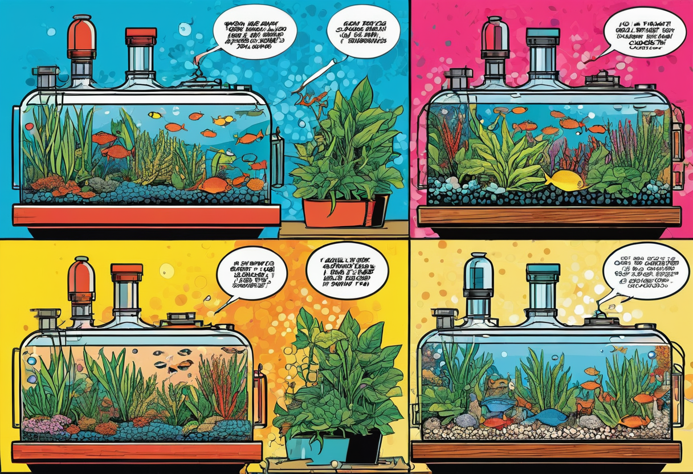

CO₂-Düngung für Einsteiger – Einfach loslegen
CO₂ ist einer der wichtigsten Bausteine für gesundes Pflanzenwachstum im Aquarium. Ohne ausreichend Kohlendioxid können selbst robuste Pflanzen nicht richtig wachsen – Blätter bleiben klein, Stängelpflanzen verkahlen und Algen nutzen die entstehende Lücke. Viele Einsteiger scheuen sich vor dem Einstieg in die CO₂-Düngung, weil die Technik auf den ersten Blick kompliziert wirkt. Dabei ist eine einfache CO₂-Anlage heute erschwinglicher und benutzerfreundlicher denn je. Dieser Guide zeigt dir, wie du ohne Vorkenntnisse mit der CO₂-Düngung startest, worauf du bei der Wahl der Anlage achten musst und wie du die Dosierung sicher einstellst.
Der Begriff „CO₂-Düngung“ klingt nach Chemie und Technik, aber im Kern geht es um etwas ganz Einfaches: Pflanzen brauchen CO₂ zum Wachsen, genauso wie sie Licht und Nährstoffe brauchen. In der Natur strömt Kohlendioxid durch Wasserbewegung und Zersetzungsprozesse ständig nach. Im Aquarium ist dieser Nachschub stark begrenzt. Besonders in Becken mit viel Licht und vielen Pflanzen wird CO₂ schnell zum limitierenden Faktor. Die Folge sind gelbe Blätter, kümmerliches Wachstum und oft ein Algenproblem. Eine CO₂-Anlage schafft hier Abhilfe – und das effektiver als jedes andere Mittel.
Warum CO₂ auch für Einsteiger sinnvoll ist
Viele Ratgeber empfehlen, als Anfänger erst einmal ohne CO₂ zu starten. Das ist prinzipiell richtig, denn es gibt genug robuste Pflanzen, die auch ohne zusätzliches CO₂ gut auskommen. Aber wer von Anfang an Freude an kräftig grünen, dicht wachsenden Pflanzen haben möchte, für den ist eine CO₂-Anlage eine lohnende Investition. Die Pflanzen wachsen nicht nur sichtbar besser, sie nehmen auch mehr Nährstoffe auf und entziehen Algen damit die Lebensgrundlage. Ein gut mit CO₂ versorgtes Aquarium ist stabiler, klarer und pflegeleichter.
Ein häufiges Vorurteil ist, dass CO₂ kompliziert zu dosieren und gefährlich für Fische sei. Dabei ist eine moderne CO₂-Druckgasanlage mit Druckminderer und Magnetventil heute kinderleicht einzustellen. Wenn du dich an die grundlegenden Sicherheitsregeln hältst und die Dosierung langsam steigerst, ist CO₂ für alle Aquarienbewohner unbedenklich. Im Gegenteil: Fische in gut bepflanzten Becken mit stabiler CO₂-Versorgung haben mehr Sauerstoff, weil die Pflanzen bei Licht aktiv Photosynthese betreiben und Sauerstoff produzieren.
🛒 CO₂-Einsteiger-Sets für den Start
Komplettsets mit Druckminderer, Blasenzähler, Rückschlagventil und Diffusor sind die sicherste Wahl für den Einstieg.
👉 CO₂-Einsteiger-Sets bei Amazon entdeckenBio-CO₂ oder Druckgas – was ist besser für den Start?
Bevor du eine Anlage kaufst, musst du dich zwischen zwei grundlegenden Systemen entscheiden: Bio-CO₂ (auch als Gär-CO₂ bekannt) und Druckgas-CO₂. Beide haben ihre Berechtigung, aber für Einsteiger gibt es klare Unterschiede.
Bio-CO₂ – Günstig, aber ungenau
Bio-CO₂-Systeme erzeugen Kohlendioxid durch einen Gärprozess. In einer speziellen Flasche werden Zucker, Wasser und Hefe oder fertige Gel-Packs angesetzt. Die Hefe wandelt den Zucker in Alkohol und CO₂ um. Das Gas wird über einen Schlauch zum Diffusor ins Aquarium geleitet. Diese Systeme kosten nur 20 bis 40 Euro und sind daher ein beliebter Einstieg. Allerdings haben sie einen entscheidenden Nachteil: Die CO₂-Produktion schwankt stark. In den ersten Tagen nach dem Ansetzen ist sie hoch, dann fällt sie kontinuierlich ab. Eine konstante Dosierung ist praktisch unmöglich. Außerdem muss der Zucker-Wasser-Ansatz alle ein bis zwei Wochen erneuert werden.
Druckgas-CO₂ – Stabil und präzise
Eine Druckgas-CO₂-Anlage besteht aus einer CO₂-Flasche (nachfüllbar oder Einweg), einem Druckminderer mit Feinnadelventil, einem Blasenzähler, einem Rückschlagventil und einem Diffusor. Die Anschaffung kostet 80 bis 200 Euro, je nach Qualität und Größe der Flasche. Dafür ist die Dosierung extrem stabil und präzise einstellbar. Einmal richtig eingestellt, läuft die Anlage wochenlang ohne Nachjustieren. Für Einsteiger, die merken, dass das Aquarium ihnen langfristig Freude macht, ist eine Druckgasanlage die deutlich bessere Investition. Sie vermeidet Frust durch schwankende CO₂-Werte und liefert von Anfang an verlässliche Ergebnisse.
Die richtige Dosierung – Schritt für Schritt
Der Zielbereich für CO₂ im Aquarium liegt bei etwa 20 bis 30 mg/l. Das klingt technisch, ist aber mit einem handelsüblichen CO₂-Dauertest einfach zu kontrollieren. Der Dauertest ist ein kleiner Behälter mit Indikatorflüssigkeit, der über eine Luftbrücke mit dem Aquarienwasser verbunden ist. Je nach CO₂-Gehalt färbt sich die Flüssigkeit blau (zu wenig CO₂), grün (optimal) oder gelb (zu viel CO₂).
So gehst du beim Einstellen vor:
- Diffusor tief im Aquarium und in der Strömung platzieren.
- CO₂-Dauertest mit frischer Indikatorlösung befüllen und gegenüber vom Diffusor anbringen.
- Magnetventil an eine Zeitschaltuhr anschließen: CO₂ zwei Stunden vor Lichtbeginn einschalten, eine Stunde vor Lichtende ausschalten.
- Mit einer sehr niedrigen Blasenzahl beginnen (z. B. eine Blase alle zwei Sekunden bei einem 60-Liter-Becken).
- Täglich die Blasenzahl leicht erhöhen und den Dauertest beobachten, bis er hellgrün anzeigt.
- Zwischen jeder Erhöhung mindestens 24 Stunden warten – der Dauertest reagiert verzögert.
Die wichtigste Regel für Einsteiger: Langsam herantasten. Lieber eine Woche mit zu wenig CO₂ fahren als einen Tag mit zu viel. Deine Fische werden es dir danken.
Auf die richtige Strömung kommt es an
CO₂ nützt nichts, wenn es nicht im ganzen Becken verteilt wird. Der Diffusor erzeugt feine Bläschen, die von der Strömung erfasst und durch das Aquarium getragen werden müssen. Ideal ist eine Positionierung im Ausströmer des Filters oder an einer Stelle, an der die Filterströmung die Bläschen direkt erfasst und im Kreis bewegt. Steht das Wasser zu ruhig, steigen die CO₂-Blasen senkrecht zur Oberfläche auf und entweichen ungenutzt.
Achte darauf, dass die Strömung nicht zu stark ist. Zu viel Wasserbewegung an der Oberfläche treibt ebenfalls CO₂ aus. Eine leichte Oberflächenbewegung ist ausreichend und wichtig für den Sauerstoffeintrag. Vermeide stark plätschernde Ausströmer oder Sprudelsteine während der CO₂-Phase.
Typische Anfängerfehler und wie du sie vermeidest
- Zu hohe Startdosierung: Viele Einsteiger drehen das Ventil zu weit auf, weil sie schnelle Ergebnisse sehen wollen. Das stresst die Fische und kann zu Sauerstoffmangel führen. Starte niedrig und steigere langsam.
- Kein Rückschlagventil: Ohne Rückschlagventil kann Wasser bei Druckabfall in den Druckminderer und die Flasche zurücklaufen. Das zerstört die Technik und ist gefährlich. Ein Rückschlagventil kostet nur wenige Euro.
- Dauertest falsch abgelesen: Der Dauertest reagiert mit ein bis zwei Stunden Verzögerung. Stelle nicht sofort nach einer Änderung nach, sondern warte ab.
- CO₂ ohne Düngung: Sobald CO₂ verfügbar ist, steigt der Nährstoffbedarf der Pflanzen. Ohne ausreichende Makro- und Mikronährstoffe (NPK, Eisen) kommt es zu Mangelerscheinungen und Algen.
- Diffusor nie gereinigt: Mit der Zeit setzen sich Kalk und Algen auf der Keramikscheibe ab. Die Blasen werden gröber, die Verteilung schlechter. Reinige den Diffusor regelmäßig.
Düngung anpassen – mehr CO₂ bedeutet mehr Nährstoffe
Ein häufiger Fehler ist, CO₂ zu installieren, aber die Düngung nicht anzupassen. Wenn die Pflanzen plötzlich mehr CO₂ zur Verfügung haben, steigt ihre Photosyntheseleistung. Sie wachsen schneller und brauchen entsprechend mehr Stickstoff (Nitrat), Phosphor (Phosphat), Kalium und Spurenelemente. Wer jetzt nicht nachdüngt, bekommt schnell Mangelerscheinungen: gelbe Blätter, Löcher in den Blättern oder blasse Triebspitzen.
Ein guter Startpunkt ist ein Volldünger, der sowohl Makro- als auch Mikronährstoffe enthält. Viele Hersteller bieten spezielle CO₂-begleitende Düngerlinien an, die auf den erhöhten Bedarf abgestimmt sind. Teste regelmäßig Nitrat und Phosphat – sie sollten im Bereich von 10–25 mg/l Nitrat und 0,1–1 mg/l Phosphat liegen. Wenn die Werte regelmäßig gegen Null gehen, erhöhe die Düngermenge oder die Düngfrequenz.
🛒 Empfohlene Produkte für den CO₂-Start
Diese Produkte haben sich in der Praxis bewährt und sind ideal für Einsteiger:
CO₂ und Algen – was ist dran?
Viele glauben, dass CO₂ Algen verursacht – dabei ist das Gegenteil der Fall. Stabile CO₂-Werte sind eine der wirksamsten Maßnahmen gegen Algen. Algen entstehen oft dann, wenn die Wasserwerte schwanken oder bestimmte Nährstoffe im Überfluss vorhanden sind, während andere fehlen. Ein gut mit CO₂ versorgter Pflanzenbestand wächst dicht und schnell und entzieht dem Wasser so effektiv Nährstoffe, dass Algen kaum eine Chance haben.
Problematisch ist nicht CO₂ an sich, sondern eine instabile CO₂-Versorgung. Wenn der CO₂-Spiegel morgens niedrig ist, mittags stark ansteigt und abends wieder abfällt, gerät der gesamte Stoffwechsel der Pflanzen aus dem Takt. In dieser Instabilität entstehen häufig Algen. Deshalb ist eine gleichmäßige, geregelte CO₂-Zufuhr mit Druckgas und Magnetventil so wichtig.
Sicherheit – worauf du achten musst
CO₂-Druckgasflaschen stehen unter hohem Druck (50–200 bar). Sie sind sicher, solange du einige Grundregeln beachtest. Die Flasche muss immer aufrecht und gegen Umfallen gesichert im Unterschrank stehen. Ein loses Umherrollen kann das Ventil beschädigen – das ist die häufigste Unfallursache. Verwende eine Flaschensicherung oder stelle die Flasche in eine stabile Ecke. Öffne das Ventil immer langsam und nie ruckartig. Wenn du die Flasche austauschst, schließe zuerst das Ventil und lasse den Druck im Druckminderer ab, bevor du die Verschraubung löst.
Ein Rückschlagventil zwischen Diffusor und Blasenzähler ist Pflicht. Es verhindert, dass Wasser bei Druckabfall in den Druckminderer zurückfließt. Kontrolliere regelmäßig alle Schlauchverbindungen auf Dichtheit. Ein Leck ist meist am zischenden Geräusch oder an beschlagenen Stellen zu erkennen. Mit CO₂-Feuchtigkeitsindikatoren (kleine Karten, die sich bei CO₂ verfärben) kannst du auch kleinere Lecks aufspüren.
Fazit – Trau dich!
CO₂-Düngung ist kein Hexenwerk. Mit einer günstigen Druckgasanlage, einem zuverlässigen Druckminderer und einem einfachen Dauertest kannst auch du als Einsteiger dein Aquarium auf das nächste Level bringen. Die Pflanzen werden dich mit sattem Grün, dichtem Wuchs und manchmal sogar mit Blüten belohnen. Wichtig ist, dass du langsam startest, die Dosierung behutsam erhöhst und die Reaktion deiner Fische und Pflanzen beobachtest. Nach zwei bis drei Wochen hast du ein Gefühl für die richtige Einstellung und fragst dich, warum du nicht früher angefangen hast.
Jedes Aquarium ist anders. Lass dich nicht entmutigen, wenn die ersten Versuche nicht perfekt sind. Mit der Zeit entwickelst du ein Gespür für das Zusammenspiel von CO₂, Licht, Düngung und Strömung. Und dann wirst du feststellen: Ein gut mit CO₂ versorgtes Aquarium ist nicht komplizierter zu pflegen als eines ohne – es ist einfach nur schöner.
Mehr zur allgemeinen Düngung und zu Makro- und Mikronährstoffen findest du in unserem Artikel Aquarium Düngung Guide. Für die Grundlagen der CO₂-Technik empfehlen wir unseren ausführlichen CO₂-im-Aquarium-Ratgeber.